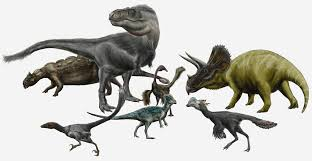

Dinosaurs
Dinosaurs are a diverse group of reptiles[note 1] of the clade Dinosauria. They first appeared during the Triassic period, between 245 and 233.23 million years ago (mya), although the exact origin and timing of the evolution of dinosaurs is a subject of active research. They became the dominant terrestrial vertebrates after the Triassic–Jurassic extinction event 201.3 mya and their dominance continued throughout the Jurassic and Cretaceous periods. The fossil record shows that birds are feathered dinosaurs, having evolved from earlier theropods during the Late Jurassic epoch, and are the only dinosaur lineage known to have survived the Cretaceous–Paleogene extinction event approximately 66 mya. Dinosaurs can therefore be divided into avian dinosaurs—birds—and the extinct non-avian dinosaurs, which are all dinosaurs other than birds.

Dinosaurs are varied from taxonomic, morphological and ecological standpoints. Birds, at over 10,700 living species, are among the most diverse groups of vertebrates. Using fossil evidence, paleontologists have identified over 900 distinct genera and more than 1,000 different species of non-avian dinosaurs. Dinosaurs are represented on every continent by both extant species (birds) and fossil remains. Through the first half of the 20th century, before birds were recognized as dinosaurs, most of the scientific community believed dinosaurs to have been sluggish and cold-blooded. Most research conducted since the 1970s, however, has indicated that dinosaurs were active animals with elevated metabolisms and numerous adaptations for social interaction. Some were herbivorous, others carnivorous. Evidence suggests that all dinosaurs were egg-laying, and that nest-building was a trait shared by many dinosaurs, both avian and non-avian.
